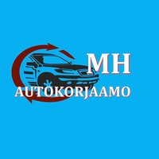

Autokorjaamo on paikka, jossa luottamus syntyy ensi minuuteista alkaen. MH Autokorjaamo Kaarinassa on osoitus siitä, miten pienikin korjaamo voi tarjota täysin ammattimaista, tarkkaa ja aidosti asiakaslähtöistä palvelua. Vuodesta 2021 asti toiminut yritys on rakentanut maineensa yksinkertaisella periaatteella: rehellinen arvio, läpinäkyvä työ ja lopputulos, johon asiakas voi luottaa.
Kaarina sijaitsee Turun kupeessa, ja sen asukkaat ansaitsevat huoltopalvelun, joka ei edellytä pitkiä matkoja eikä anonyymejä tehdassaleja. MH Autokorjaamossa asiakasta ei jonoteta numeron perusteella — täällä tunnetaan autosi historia, ja jokainen huoltokäynti on jatkumo edelliselle.

Huolto ja katsastuskunto
Säännöllinen huolto on auton pisin elinkaari. MH Autokorjaamossa suoritetaan merkkiriippumattomat huollot, jotka kattavat öljynvaihdon, suodattimet, jarrujen tarkastuksen ja kaiken muun, mitä autonvalmistajan huolto-ohjelma vaatii. Tavoitteena on aina katsastusvarmuus — ei pelkkä paperit läpäisevä minimitarkastus.
Korjaukset ja diagnostiikka
Venttelikopantiivisteet, jakoketjut, jousituskomponentit, jarruremontit — nämä ovat töitä, joissa kokemuksella on väliä. MH Autokorjaamossa korjaustyö tehdään huolella alusta loppuun, ilman väliin jätettyjä vaiheita. Ennen jokaista korjausehdotusta ajoneuvo diagnosoidaan asianmukaisesti, jotta raha ei mene väärään paikkaan.
Ripeä, reilu ja rehellinen. Auto lähti korjaamolta kuntoon eikä takaisin tarvinnut palata.
— Asiakasarvostelu · Google · ★★★★★
Renkaat ja kausityöt
Suomalaiseen talveen valmistautuminen on oma rituaalinsa. Renkaanvaihto ja tasapainotus keväällä ja syksyllä kuuluu MH Autokorjaamon palveluihin, ja ajoitus on aina sovittavissa asiakkaan kalenterin mukaan — ei jonoon jäämistä kiireisimmän viikon ruuhkaan.
MH Autokorjaamo palvelee Kaarinan lisäksi kaikkia lähialueen asiakkaita — Turusta, Piikkiöstä ja Paraisilta. Varaa aikasi hyvissä ajoin: puhelimella tai sähköpostilla, niin sopiva hetki löytyy nopeasti.
MH Autokorjaamo, Y-tunnus 3194083-9, rekisteröity 04.03.2021.
86 % asiakkaista suosittelee (6 Google-arvostelua, heinäkuu 2026).
Hintaluokka €. Tarkka hinnoittelu pyynnöstä — soita tai lähetä sähköposti.